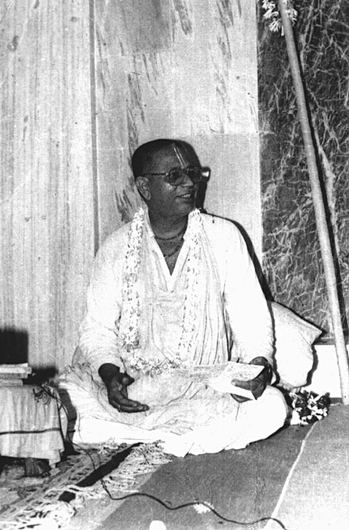
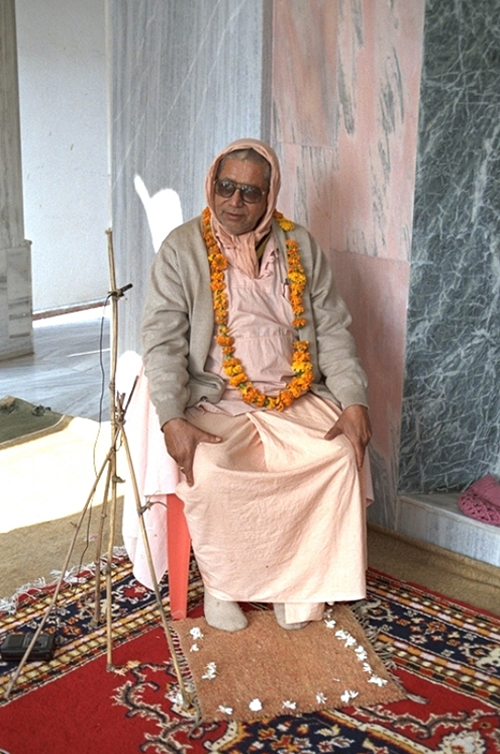
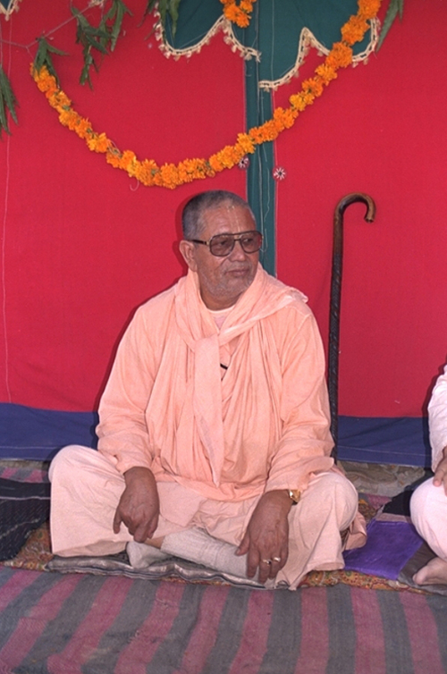
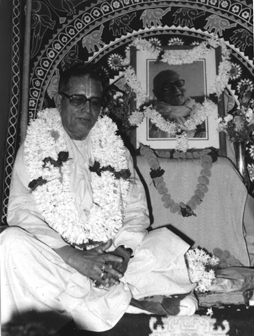
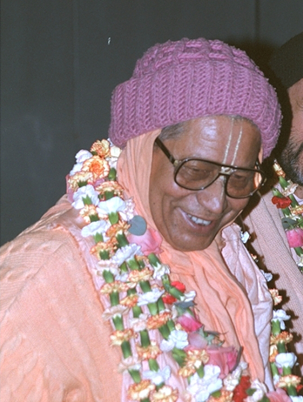
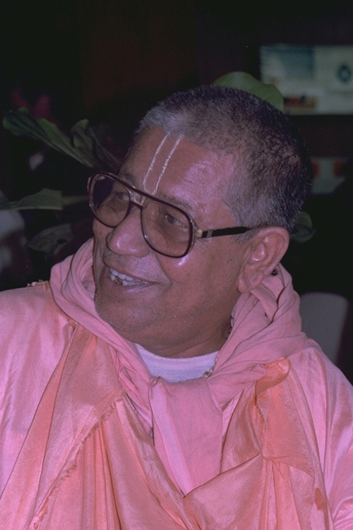
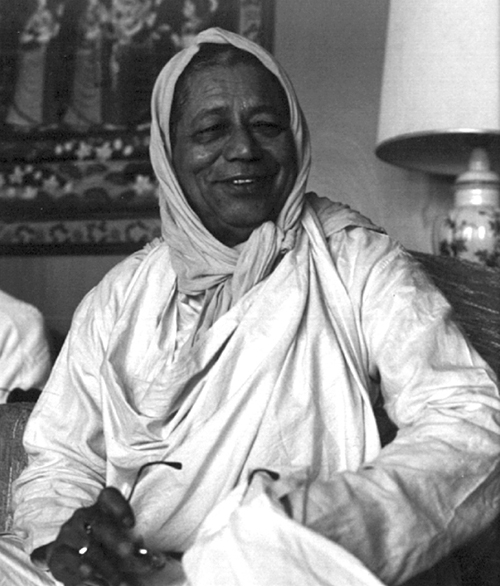
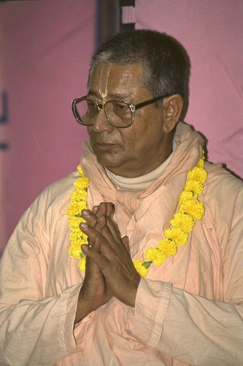

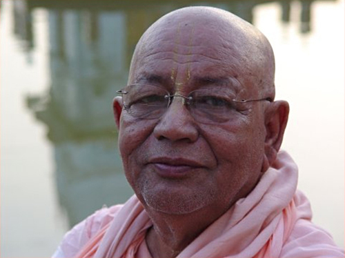
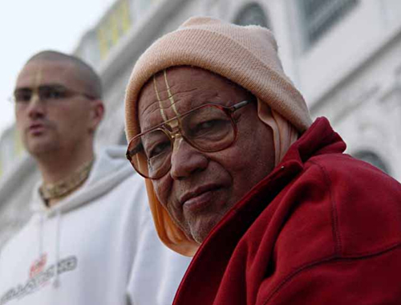
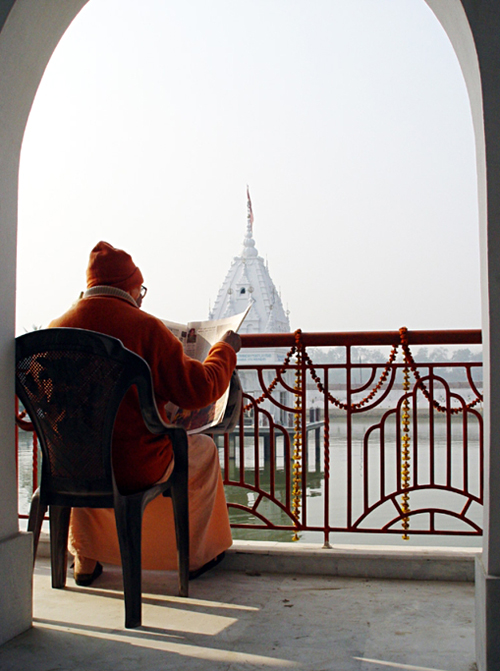
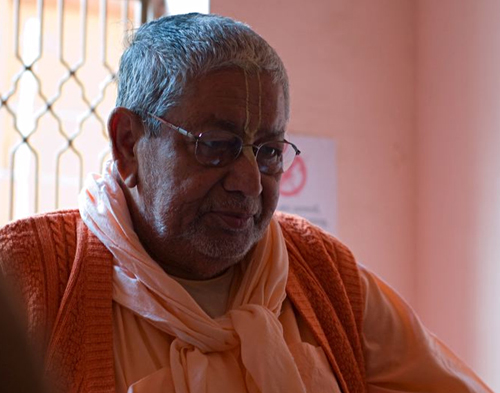
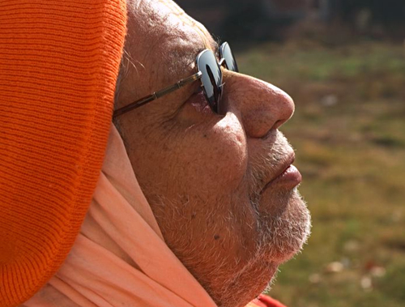
Материальный мир
1. Возвращаясь к этому миру, можно сказать, что причина страдания человечества в том, что сами люди не могут понять собственного предназначения — они не могут познать себя.
2. В этом мире все живые существа обречены на бытие полное страданий. Но существует наивысшее состояние — прекрасный мир высшей божественной реальности, которого живые существа способны достигнуть по милости Господа Кришны.
Святое Имя
3. Наша задача — подготовить себя как место для танца Кришнанама. Именно в этом направлении стоит прилагать усилия, и тогда мы обретем способность видеть, что все деревья, все параферналии в Навадвипа Дхаме и в Матхе Шрилы Гуру Махараджа трансцендентны. Такое божественное чувство необходимо нам, и если уж оно пришло, то никогда не покинет сердце. В настоящее время наши попытки носят мирской характер, но мы должны использовать в своих стараниях все свои возможности. ( «Божественный слуга», гл. 3)
4. Стандарт, который установил Шрила Свами Махарадж на Западе для поведения и воспевания Махамантры, должен приниматься всеми. Но в особых случаях можно все-таки воспевать минимум четыре круга, памятуя о милости Шрилы Сарасвати Тхакура а также Шрилы Шридхара Махараджа. («Божественное руководство», гл. 7)
5. Когда Гурудев дает посвящение в Харинам, то в это время ученик обещает: «Я буду воспевать определенное количество кругов (четыре, шестнадцать, шестьдесят четыре и т.д.)», и если он нарушает свой обет, то этим совершает оскорбление Гуру. Поэтому минимум в четыре круга облегчает практику для некоторых последователей. В целом, такие великие личности как Шрила Шридхар Махарадж вправе изменять стандарты согласно времени, обстоятельствам и способностям ученика. Но в любом случае суть сводиться к тому, чтобы воспевать Харе Кришна как можно больше — без оскорблений, чистосердечно, с искренностью и любовью служить Гуру-Вайшнавам и их Махапрасаду. («Божественное руководство», гл. 7)
6. Шри Харинам открывает себя через служение Вайшнавам, и Шрила Прабхупада Сарасвати Тхакур отводил более важное значение служению Гуру-Вайшнавам. Его наставления о воспевании четырех кругов указывают на то, что такие служители должны воспевать Махамантру как можно больше. Шрила Шридхар Махарадж также постоянно говорил: «Нам необходимо качество, а не количество». Также в Патравали (письмах) Шрилы Сарасвати Тхакура мы находим письмо Шриле Шридхару Махараджу, в котором он уделяет более важную роль служению Шри Гуру-Вайшнавам, так как лишь благодаря такому служению достигается квалификация качественно воспевать Харинам. Но если кто-то может увеличить количество, не во вред качеству, то это очень прекрасно. («Божественное руководство», гл. 7)
7. Когда мы воистину примем Кришнанам, тогда придет способность видеть дивные деяния Господа. Кришна будет танцевать на нашем языке. Сейчас у нас не получается молиться совершенным образом, но когда Шуддханам явит Себя в наших устах, Он будет танцевать, и только тогда мы обретем способность истинно чувствовать. («Божественный слуга», гл. 3)
8. Все зависит от настроения практикующих: если они получат некоторые ясные ощущения, то тогда сразу же попытаются воспевать Махамантру совершенно. И тогда к ним обязательно придет помощь с высшего уровня — Кришна поможет им в облике Гуру. («Божественное руководство», гл. 1)
Служение
9. Следуя за святым преданным, садху, мы сумеем достичь всего. Порой, живя с садху, мы не обретаем блага из-за соблазна попанибратствовать и пооскорблять его, но живя вдалеке от Вайшнава, мы можем памятовать о нем и служить ему с великим почтением, и это лучшее для обусловленной души. («Божественный слуга», гл. 3)
10. Мы получили это редкое человеческое рождение, разум, энергию и множество других вещей, необходимых для того, чтобы сознательно прийти к служению Шри Кришне, поэтому мы не должны позволять себе рвать на куски наше настроение служения в обмен на какую-то часть мирского. («Божественное руководство», гл. 7)
11. Любой, кто приходит во Вриндаван, должен пытаться совершать севу. Бхаджан — это сева, служение. («Божественное руководство», гл. 5)
12. Старайтесь удовлетворить слуг Кришны, и от них вы с легкостью получите результат — Кришна-прему. Подлинный путь очень прост: пойте Харе Кришна Махамантру и посвятите все свое время Вайшнава-севе. Нет никакого смысла смотреть по сторонам, необходимо отдать все свое внимание лишь служению Гурудеву и Вайшнавам. («Божественное руководство», гл. 1)
13. Шрила Шридхар Махарадж не рекомендовал нам читать много книг. Шрила Бхактивинод Тхакур также был против излишнего чтения. Также у тех, кто живет в Матхе, нет для этого лишнего времени. Все наше время отдано служению. («Божественное руководство», гл. 1)
14. Практиковать Сознание Кришны станет легко, если мы сможем полностью погрузиться в служение Всевышнему. Многое мы можем совершать в нашей практике, но все плоды наших действий следует отдавать Кришне. Тогда всякая ответственность будет с нас снята, она просто будет отдана Богу. («Божественное руководство», гл. 1)
15. Совершенно необходимо видеть истинную цель в жизни; и эта цель — служение Гуру и Вайшнавам, это самое ценное в нашей жизни. Занять какое-то положение или усесться на возвышении запросто может каждый. Обрести же милость Гуру и Вайшнавов очень сложно, хотя их милость — величайшее богатство, без которого наша садхана невозможна. Наша святая надежда, что Гурудев, гуру-бхаи и другие Вайшнавы не оставят нас. Они всегда одаривают нас беспричинной милостью, таким образом совершенствуя нашу духовную жизнь. («Божественный слуга», гл. 2)
16. Ничто, помимо служения Вайшнавам, не относится к чистому служению Кришне. Остальное — карма. Только служение Вайшнавам — полноценное служение Господу, и посему только оно может поднять нас из иллюзии в мир Святого Служения. Служение дживам будет лишь тогда подлинным благом, когда мы вовлекаем их в искреннее служение Шри Гуру и Вайшнавам, а иначе такое служение будет источником страданий как для этих душ, так и для нас самих — локойам карма-бандханах. («Божественный слуга», гл. 4)
17. Все в этом мире приходит и уходит. Иногда у нас все в порядке, а иногда настигают несчастья. Иногда человек ест отборные продукты, а иногда приходится есть чуть ли не отбросы. Бывает, что наши желания исполняются, а бывает, что все планы терпят крах. Но жизнь в служении не имеет с таким существованием ничего общего. Мы должны сторониться всего мирского. Мы должны пытаться связать свою жизнь с преданным служением, стремиться всегда выполнять наши обязанности в служении, но результаты в руках Кришны. Что бы ни пришло ко мне, успех или неудача, я постоянно пытаюсь исполнить все наилучшим образом. Такова наша жизнь, а блаженство и успех в конце концов придут к нам. («Божественный слуга», гл. 4)
18. В нашей практической жизни постоянно могут происходить какие-то беспокойства, но мы не обращаем на это внимания. Тот, кто старается служить, непременно сталкивается в материальном мире с теми или иными проблемами. Тот же, кто не пытается служить, не встретит затруднений. Он просто будет в одиночестве воспевать на своих четках, не пробуя приложить хотя бы малейшее усилие в направлении служения. Так он избавит себя от беспокойств — и от прогресса. Но принимающий жизнь-служение должен испытать некоторые беспокойства, и это также один из благоприятных признаков. Если спортсмен бежит и не чувствует никакой боли в своих ногах, то такой бег для него недостаточен. Это значит, что он не прилагает должных усилий и не сможет победить в состязании. Для начинающих невозможно служение в состоянии расслабленности. Служение всегда трудно, и тот, кто способен совершать его, будет благословлен. («Размышления к Золотому юбилею», гл. 2)
19. Мы всегда находимся между надеждой и безнадежностью. Надежда приходит, когда мы изменяем себя, согласно идеалам духовного мира, но когда мы отделяем себя от Мира Служения, к нам приходит состояние безнадежности. Нам необходима постоянная связь, приходящая через служение, и если мы будем неустанно совершать попытки в этом направлении, то очень скоро получим облегчение. («Божественное руководство», гл. 1)
20. Благая удача необходима, и она приходит через севу. Совершающий истинную севу получит благой результат. Однако тот, кто совершает «севу», но постоянно думает о своих собственных интересах, будет проигнорирован Бхакти, и Она не придет к нему. («Божественное руководство», гл. 1)
21. Без сомнения, вы все очень удачливы, ибо получили связь с трансцендентным миром, а также потому, что в вас родилось стремление попасть туда; а если бы это было не так, то зачем бы вы пришли сюда? Попытайтесь приблизиться к этому миру в настроении служения, и вы достигнете его очень легко, если вы на правильном пути. Правильный путь — значит удовлетворить Гуру и Вайшнавов. («Божественное руководство», гл. 1)
22. Многие из наших друзей постоянно ощущают беспокойства от своей мирской деятельности. Но они могут очень легко разрешить эту проблему. Для этого необходимо очень искренне и с исключительной преданностью посвятить себя служению Гуру и Вайшнавам. Именно такое служение принимает Господь. Если преданные направят свою энергию в этом направлении, то освободятся от влияния иллюзии. («Божественное руководство», гл. 1)
23. Если мы искренне попытаемся призвать Кришна-бхакти в настроении служения, то оно обязательно придет. Это может произойти мгновенно или через долгий срок, но если мы будем прилагать попытки, то нас обязательно ждет успех. Такие попытки называются садханой. («Божественное руководство», гл. 1)
24. Мы можем внешне чувствовать или видеть, что кто-то совершает служение, но это не всегда действительно сева. Сева привлекает еще больше севы, тогда почему же еще больше севы не приходит? Видя эти симптомы, мы можем сказать, что кто-то не совершает севу, хотя и занят в какой-то позитивной деятельности. («Божественное руководство», гл. 1)
Самопредание
25. Когда ребенок учится ходить, он постоянно падает; однако оперевшись о землю, он вновь встает. Какое бы оскорбление мы ни совершили, если мы пребываем в настроении полной зависимости от Него, Он нас защитит. В этом наша единственная надежда. Нужно предаться лотосным стопам Кришны, а это и есть сознание Кришны. («Наставления учителя», ч.1, гл. 4)
26. Понять, что такое Кришна-бхакти, не очень тяжело. Дух самопредания — вот что необходимо для этого. Если вы предаетесь, вы сможете понять все. Но если у вас отсутствует полная самоотдача, к вам придет много трудностей. Для предавшейся души трудностей не существует. («Размышления к Золотому юбилею», гл. 4)
27. Если кто-то следует наставлениям своего Гуру в настроении самопредания, то это будет бхакти; в противном случае это будет благочестивой кармой. Если кто-то следует наставлениям Писаний и Гуру, он несомненно получит благо, но для бхакти этого недостаточно. («Божественное руководство», гл. 1)
28. Мы должны совершать садхану, задействуя всю свою энергию для достижения высшей цели, и если мы получаем поддержку от окружения — чего же нам бояться? Быть может, иногда мы спотыкаемся и падаем, но сию же минуту следует встать, воспрянуть и устремиться вперед. Правильная деятельность — это попытки в духе самопредания. Следует использовать тело в такой правильной деятельности ради блага души. («Божественный слуга», гл. 1)
29. В полном самопредании мы должны пытаться привнести и естественно утвердить это понимание в самой нашей жизни. Двадцатичетырехчасовое служение Господу необходимо, но оно осуществляется по направлению к близко явленному Богу — Гуру, Вайшнавам и Махапрабху. На них направлено наше самопредание, но не самопредание ограниченное простым поклоном и лежанием у стоп, а самопредание, выраженное в служении. Самопредание и служение должны совершаться с максимально возможными усилиями двадцать четыре часа в сутки, и тогда мы сможем достичь высшей цели, обойдя множество беспокойств. Таков дух преданности. («Божественный слуга», гл. 2)
30. Смысл в том, что без самопредания и трансцендентного знания нам никогда не увидеть ни истинную Вриндаван-Дхаму, ни Наму, Рупу, Гуну и Лилу (Имя, Облик, Качества и Деяния) Господа. Все это трансцендентно, поэтому материальными глазами мы никогда не сможем их увидеть. Это главное. («Божественное руководство», гл. 3)
31. Настоящая преданность Кришне очень редко достижима. Где бы вы ни увидели такую Преданность, приобретите ее ценой своего страстного желания, лаульям. Лишь эта жажда может дать вам часть этой собственности. Это единственная цена, а иначе миллиарды жизней в добродетели тщетны. Для этого необходим голод, и он возникает, когда желудок пуст. Сначала примите немного лекарства и очистите свой организм. Тогда постепенно появится голод. («Трансцендентный мир». ( Гаудия-даршан, №7)
Господь Нитьянанда
32. Без служения Нитьянанде Прабху мы ничего не достигнем. Нитьянанда Прабху — это Гурудев. Его положение подобно положению Кришны, и даже превышает его. Нитьянанда Прабху делает даже то, чего не делает Кришна. Таково Его высочайшее и могущественнейшее положение. И только милостью Нитьянанды Прабху мы можем получить доступ в лилу Радха-Кришны. Махапрабху желает распространить жителям этого мира Кришна-севу под руководством Радхарани. Такова высочайшая цель нашей жизни, и милостью Нитьянанды Прабху мы можем использовать этот шанс. («Божественный слуга», гл. 4)
33. Когда Гуру и Вайшнавы будут довольны нами, они даруют нам милость, с помощью которой мы сможем совершать служение Радха-Кришне и Махапрабху. Шри Нитьянанда Прабху очень милостив, и Он поднимает обусловленные души из падшего состояния до высшего уровня. Таково могущество Нитьянанды Прабху. Проявление Нитьянанды Прабху — Гурудев. Он всегда распространяет милость Махапрабху и открывает доступ в лилу Радха-Кришны. Он казначей духовного мира. Он владыка той сферы, и когда мы вступим в мир Голоки, мы будем облагодетельствованы милостью слуг Радхарани. Но первейший и наиважнейший долг — служение Нитьянанде Прабху во имя Его удовлетворения. («Божественный слуга», гл. 4)
34. Очень большая удача, когда мы можем вовлекать других в служение Кришне, и Кришна делает это возможным через Гуру. Поэтому Нитьянанда Прабху — единственная надежда нашей жизни. («Божественный слуга», гл. 4)
Господь Гауранга Махапрабху
35. Шриман Махапрабху назначил Шрилу Рупу Госвами во главе Своей Сампрадайи. Мы получили связь в этой линии, и однажды все наши устремления в этом сокровенном служении непременно осуществятся. Этой надеждой мы живем. («Божественное руководство», гл. 4)
36. Мы настолько удачливы, что не так давно, буквально 500 лет назад, в этот мир низошел Господь Гауранга Махапрабху. И придя со Своим окружением, Он пришел также в форме Cвоего Cвятого Имени. («Божественное руководство», гл. 4)
37. Махапрабху всегда хотел, чтобы Его преданные жили в мире, поскольку это очень важно для практики духовной жизни. А это возможно, только если преданные смиренны, терпеливы и почтительны к окружающим. «Я не хочу судить, достоин ли кто-то почтения или нет, поскольку сам я незначительная душа, стремящаяся быть слугой слуги слуг Кришны. Поэтому, если кто-то хочет от меня почтения, я должен незамедлительно выразить ему свое почтение, чтобы не предоставить никакого повода считать меня врагом». («Божественное руководство», гл. 4)
38. Садху, Гуру и Вайшнавы просто пытаются удовлетворить Кришну, и если мы будем следовать им, то легко получим полный результат всех советов Святых Писаний. Мы должны продолжать практиковать Кришна-сознание таким простым методом. Шриман Махапрабху также наставлял нас, что нет необходимости все усложнять, достаточно только петь Харе Кришна, занять себя в Вайшнава-севе и совершать Прасада-севу. («Божественное руководство», гл. 1)
Гуру
39. Вначале необходимо предаться Шри Гуру и Вайшнавам, второе — следовать их указаниям. Служение начинается с понимания: «Я должен делать то, что они мне советуют». А что необходимо для удовлетворения Гуру? Гуру всегда дает некоторые наставления ученикам, и если ученик пытается служить своему Гуру согласно этим наставлениям, то он получит желаемый результат. («Божественное руководство», гл. 1)
40. Если кто-то может сделать что-то в связи с Вечным Миром, то он получит вечный результат. Эта связь приходит через трансцендентное знание, сознание и практическую деятельность, поэтому у нас нет другой альтернативы, как следовать наставлениям Гуру. («Божественное руководство», гл. 1)
41. Согласно одному видению Высший Гуру находится в облике Баладева. Обычно же Кришна, являя путь служения Себе, становится Гуру. В облике Гуру Он приходит в материальный мир. Его положение как Гуру также в сердце преданных. Но однозначно, что там, где присутствует разнообразие величайшего служения Кришне, проявлена Мадхура-раса. На этом плане самое высшее положение из всех, кто удовлетворяет Кришну, занимает Шримати Радхарани. И это наша линия и цель жизни. («Божественное руководство», гл. 6)
42. Мы лишь надеемся, что однажды получим такую милость Гурудева. Так или иначе, мы получим дозволение войти туда по воле лидера моей группы, моего Гурудева. («Божественное руководство», гл. 6)
43. Все аспекты Кришны истинны. И одна из истин — то, что Кришна является как Ачарья ради спасения обусловленных душ. Когда Он являет Себя в таком облике, то Он очень милостив к обусловленным душам. Кришна не может терпеть их страдания и приходит как Ачарья, чтобы спасти их из этого крайне неблагоприятного положения. («Божественное руководство», гл. 6)
44. Мы можем увидеть положение Гурудева различным образом, но все это находится в Лиле Кришны. «Кришна» — значит Сила Супружеской Любви, Высший Наслаждающийся - таково полное понимание Кришны. И с этого уровня Кришна нисходит и говорит: ачарьям мам виджанийан — «Я Гуру». («Божественное руководство», гл. 6)
45. Нет сомнений, мы обусловленные души, и потому можем заблуждаться. Это вполне возможно. Однако, Гуру — сознающий Истину, и он никогда не покидает нас, ибо его удел спасать нас. Таковы качества Шри Гуру. Величие нашего Гурудева безгранично и потому мы должны освободиться от всех собственных соображений, предложив свой ум лотосным стопам Шри Гуру и полностью посвятив себя беззаветному служению ему. («Божественный слуга», гл. 2)
46. Если Гурудев будет к нам милостив, то и Кришна будет милостив, и у нас все будет, все предпосылки выдержать любые испытания. Однако, если Гуру будет неудовлетворен, мы падем в испытаниях, и Кришна нам не поможет. («Божественный слуга», гл. 1)
47. Для ученика беззаветное вручение себя Шри Гуру — жизненно важная необходимость, и если это сделано, у ученика не будет тяжких проблем в духовной жизни. («Божественный слуга», гл. 1)
48. Нужно пытаться удовлетворить своего Гурудева — и это единственный путь. Однако Гуру должен быть истинным, он должен всегда почитать своего Гуру. И это самое главное качество.
49. Если мы предложим всего себя Гуру, он не задержит нашу энергию ради собственных удобств, а направит нас к Кришне. Гуру не присваивает себе ни крупицы того, что мы подносим ему, но адресует все своему Гурудеву, и поэтому процессом шапатра ведхах нйайа вся энергия достигает Кришны. Уже оттуда энергия возвращается к преданному в форме Милости и в должное время прославляет также и его. Так Милость нисходит свыше, и Милость эта — надмирное знание.
50. Милость садху и Гуру возносит нас к трансцендентному миру. Майадеви освободит нас от своих оков лишь тогда, когда мы обретем там свое место и укрепимся в нем. Необходимо пытаться проповедовать такое понимание. Как только мы получаем осознание этого, мы должны пытаться распространить это ясное видение, давая его другим. Возможности для этого существуют постоянно, и каждый может попытаться принести какое-то благо другим, не зависимо от того, какое положение он занимает сам. («Божественное руководство», гл. 1)
51. Когда же Гуру не присутствует физически, но есть другие Вайшнавы, то служение Вайшнавам также приходит к Гуру, и он будет удовлетворен этим. Но Гуру должен быть совершенным, иначе мы не получим совершенного результата. («Божественное руководство», гл. 1)
52. Если я понимаю, что вечная жизнь — это благо, и если я действительно желаю ее, то я должен следовать своему наставнику. Если он всецело предан Господу, то он скажет, что является истинным благом для меня. В противном случае, если мой наставник не совершенен, то результат может и не быть хорошим. («Божественное руководство», гл. 1)
53. Где бы мы не находились, везде есть необходимость следовать наставлениям Гурудева как можно лучше. «Следовать» означает то, что его указаний полностью достаточно для меня. «Делай это, и ты будешь удовлетворен». Здесь нам может помочь лишь сильная вера, иначе будет невозможно следовать совершенным образом. («Божественное руководство», гл. 1)
54. Для того, кто очень активен и всегда пытается быть занятым, наставления Гурудева укажут на некоторую деятельность, и через эту позитивную занятость будет развиваться его настроение служения и увеличиваться стремление к бхакти-йоге. И если кто-то практикует правильно и его внутренние устремления полностью совпадают с его деятельностью, то эта деятельность мгновенно превращается в бхакти. («Божественное руководство», гл. 1)
55. Тот, кому выпала божественная удача, не оставит свой путь. Изо всех сил он будет пытаться следовать тому, что он получил от своего Гурудева, и его усилия всегда будут находиться в правильном русле. («Божественное руководство», гл. 1)
56. Воистину, наш духовный прогресс зависит от ясного сознания. Тот, кто получил внутреннее видение от своего Гуру, не оставит свой путь; если же его нет, то у каждого есть возможность отклониться. («Божественное руководство», гл. 1)
О Шриле Бхактиведанта Свами Махарадже
57. Шрила Бхактиведанта Свами проповедовал и был успешен. Он пытался проповедовать в Индии, но без особого успеха. Однако, его внимание всегда было направлено на проповедь на Западе, и в конце концов он сделал это. Эту историю вы знаете: целый год он пытался что-то создать. И наконец, милостью Кришны и Нитьянанды Прабху, все сдвинулось и за такое короткое время распространилось по всему миру. Я невероятно удивлен, и счастье преисполняет мое сердце. Я так и не могу понять, как такое возможно?! («Божественное руководство», гл. 3)
О Шриле Шридхаре Махарадже
58. Мы очень удачливы, поскольку одарены столь многим. Теперь же пришло время использовать наше богатство правильным образом. Шрила Гуру Махарадж говорил: «Религия — это правильный самонастрой». Все дано, но нужно правильно настроиться: понять, кто мы, в чем наш долг, кто такой Кришна, и кто Его слуга. («Наставления учителя», ч.1, гл. 2)
59. Шрила Бхактиведанта Свами подобно огромной волне захлестнул весь мир Сознанием Кришны, а сейчас пришло время для проповеди учения Шрилы Шридхара Махараджа. («Божественное руководство», гл. 3)
60. Учение Шрилы Гуру Махараджа — очень ясное. Цель достигается служением, без которого ничего невозможно достичь. Сам дух служения дает нам решимость еще больше погружаться в служение. И силой этого духа служения обретаются все блага. («Божественный слуга», гл. 4)
61. Шрила Гуру Махарадж постоянно говорил, что мы нуждаемся в живом представителе Мира Преданности, способном привести все в гармонию согласно времени, месту и обстоятельствам. Иными словами, мы всегда нуждаемся в хранителе. («Размышления к Золотому юбилею», гл. 3)
62. Не беспокойся из-за какого-то иллюзорного окружения. Ты должен помнить, что Шрила Шридхар Махарадж всегда с нами, наблюдает и заботится о нас. И в конце концов, по его божественной милости, мы обязательно получим настроение высшего служения. («Божественное руководство», гл. 7)
63. Настроение Лалиты Деви — это непрерывное служение 24 часа в сутки, и такое же настроение распространяется на всю ее группу. Кроме того, все группы проникнуты служением Лалиты Деви. Поэтому нам необходимо получить милость Шрилы Шридхара Махараджа. Другого пути нет, ибо он занимает положение Патриарха всей Рупануга Сампрадайи. Он — величайший слуга Лалиты Деви, и этот слуга — Шримати Рупа Манджари. («Божественное руководство», гл. 4)
64. По милости Шрилы Шридхара Махараджа мы собрались здесь и молим о милосердии у лотосных стоп Гурудева. И если волна милости Шрилы Шридхара Махараджа затопит наше сердце, то мы получим позволение войти в этот мир. («Божественное руководство», гл. 4)
65. Нитйананда Прабху может дать нам разрешение войти в тот мир, но Он может дать только «паспорт». Лишь спутницы Шримати Радхарани могут дать нам «визу» в этот мир высочайшего служения Господу. Поэтому мы возносим молитвы нашему Шриле Шридхару Махараджу, ибо он — неотличное проявление Шримати Радхарани. («Божественное руководство», гл. 4)
66. Шрила Шридхар Махарадж постоянно делал ударение на служении Гуру и Вайшнавам, ибо благодаря их милости это знание проявляется в нашем сердце. «Знать» означает «чувствовать». Мы можем сказать, что у нас есть некоторые ощущения, и вы, следуя этому процессу, также получите их. Наше будущее светло, но следует строго следовать наставлениям Шрилы Гуру Махараджа и стремиться к святой Цели. («Божественное руководство», гл. 1)
67. Если мы хотим служить Шриле Гуру Махараджу исключительным образом, не отвлекаясь ни на что другое, то избавимся от всех проблем. Мы должны служить Гуру очень бдительно, ибо лишь тогда мы получим этот шанс, а иначе будем обмануты. Шрила Шридхар Махарадж был очень простосердечен. Он не хотел никого запутать, и поэтому ничего не усложнял. Он представлял лишь Кришну и Кришна-бхакти. Мы также пытаемся следовать его линии мысли, но если его милость не проявится в нас как наш проводник, то мы ничего не достигнем и собьёмся с пути. Поэтому мы должны пытаться исключительным образом удовлетворить Шрилу Шридхара Махараджа. И тогда он будет очень счастлив. («Божественное руководство», гл. 1)
68. Когда Шрила Шридхар Махарадж основал Шри Чайтанья Сарасват Матх, он просто желал поклоняться Господу вместе с несколькими последователями. Но сейчас Шри Чайтанья Сарасват Матх очень сильно вырос, и день ото дня ради проповеди другим, увеличивается все больше и больше. Однако линия Шрилы Шридхара Махараджа — это линия исключительного самопожертвования Господу. («Божественное руководство», гл. 1)
69. Наша жизнь очень коротка, поэтому следует использовать любую возможность продвинуться на пути священной практики служения Шри Хари. Не думайте, что лишь разрешив проблему материальных неудобств, можно прийти к служению Господу. Следуйте указаниям Шрилы Гуру Махараджа сейчас, без промедлений, и разрубите тем самым узел материальной обусловленности. («Наставления учителя», ч.1, гл. 4)
70. Шрила Шридхар Махарадж сказал мне учиться, но когда ко мне пришло надлежащее знание, он сказал, что этого достаточно: «Нет необходимости читать больше, сейчас ты должен совершать севу». Мы изо всех сил пытались оказывать севу, всем сердцем и душой, и постепенно увидели, что все раскрывается в нашем сердце. Мы не пытались коллекционировать знание Писаний. Я прочитал Шри Брахма-самхиту лишь несколько лет назад, а присоединился к Миссии сорок пять лет назад! Я прочел Шри Брахма-самхиту в последние дни Шрилы Шридхара Махараджа. («Божественное руководство», гл. 1)
71. Внутренние переживания должны были приходить к каждому из вас, в противном случае оставаться на этом пути преданности было бы невозможно. Но главное в учении Шрилы Шридхара Махараджа — это служение Вайшнавам и следование Гуру: на этом пути вы получите все. («Божественное руководство», гл. 1)
Нектарные наставления
72. Под руководством нашего ума мы способны на многое, но это не истинное бхакти. Наш ум постоянно скитается то здесь, то там. Беспокойный и безрассудный по природе, ум может что-то посоветовать, но от этого не всегда придет хороший результат. Если мы поступаем хорошо, то результат будет хорошим, но если мы не творим добро, то к нам вернутся одни несчастья. Таково наше положение. («Божественное руководство», гл. 1)
73. Наша ситуация также подобна войне, войне с Майей, Дургой. Это самое настоящее восстание. Шрила Бхактиведанта Свами, Шрила Шридхар Махарадж и другие создали революционную обстановку. Кто-то был убит или ранен, но ворота тюрьмы Дурга Деви были разбиты. А иначе как бы люди во всем мире воспевали «Харе Кришна»? Революция уже свершилась, и в сражении кто-то мог быть ранен или убит. Но ворота разрушены, и заключенные бегут на Вайкунтху. («Божественное руководство», гл. 3)
74. Заключенные спали, но сейчас при помощи этого сознания, они пробудились. В тюрьме произошло восстание, и они бежали. Мы очень удачливы, ибо это произошло в наше время, и мы можем видеть это. Мы невероятно удачливы, что революция произошла именно сейчас, а не в прошлом или будущем. Мы стали свидетелями множества вещей и имеем возможность общаться с генералами и солдатами, и это также великая удача. И если мы будем продолжать идти к нашему назначению в правильном русле, то это принесет всем нам высшее благо. («Божественное руководство», гл. 3)
75. Поскольку люди находятся в такой безвыходной ситуации, Господь Кришна дал возможность получить милость через святые писания, через садху, через гуру. И Он даже иногда Сам нисходит в этот мир, чтобы облегчить страдания всех живых существ. («Божественное руководство», гл. 3)
76. Мы видим множество Ачарий в этом мире. Возможно они не все совершенны, но все они прилагают усилия и как минимум делают самую грубую работу. Чтобы вырастить зерно необходимо сначала вспахать почву, затем посадить семена, полить и т.д. Существует множество видов деятельности. Таким образом все идет прекрасно. («Божественное руководство», гл. 3)
77. Суть в том, что в начале нашей жизни в преданности Господу приходят некоторые трудности, но однажды начав свое движение, мы будем продолжать двигаться очень легко. Мы ощутим, что жизнь в Сознании Кришны очень проста. Когда мы закрепимся на плане веры, все наши проблемы уйдут. Необходимо постоянно пребывать на плане веры, и тогда наше движение станет непрерывным. Однако в начале это довольно трудно, так как наша душа покрыта аханкарой, а мы не в состоянии отличить аханкару от нашей души. Поэтому нам необходимы начальные очистительные практики, чтобы наше видение улучшилось. («Божественное руководство», гл. 3)
78. Махапрасадам означает милость, и мы не должны продавать его за деньги, лишь в обмен на веру. («Божественное руководство», гл. 7)
79. Я всегда пытаюсь пребывать в гармонии с окружающим, и никогда никому не советую беспокоить или оскорблять других. Я пытаюсь каждого сделать своим другом и хочу получить благословения от родственных движений. И если я как-то неосознанно задеваю их, то я всегда молю их простить меня. И если я смогу следовать этому настроению, то я должен оставаться свободным от вайшнава-апарадхи. («Божественное руководство», гл. 7)
80. Моя проповедь — это смирение, терпение и почтение ко всем живым существам, ибо именно этому учил Махапрабху. («Божественное руководство», гл. 7)
81. У меня есть много друзей в ИСККОН, и у них очень хорошее настроение преданности. Они проповедуют и практикуют Сознание Кришны, и я испытываю к ним большое уважение. («Божественное руководство», гл. 7)
82. В действительности регулирующих принципов не четыре, а пять, и эти четыре принципа полностью пребывают в пятом. Однако, неискушенным новообращенным мы несомненно должны советовать следовать этим четырем принципам. («Божественное руководство», гл. 7)
83. Нынешнее воплощение в нашем распоряжении, и мы обязаны правильно использовать дарованный нам шанс, чтобы водвориться в Божественном Мире. Правильно использовать означает воспевать Харе Кришна Махамантру, совершать Вайшнава-севу и совершенствовать собственную садхану. («Божественный слуга», гл. 3)
84. Горячее желание — это главное, что необходимо для получения божественного знания. Если это трансцендентальное знание явит себя в наших сердцах, то все беспокойства автоматически покинут нас, подобно тому, как восходящее солнце рассеивает всю тьму. Поэтому, горячее желание Кришна-бхакти — это наша главная нужда. («Божественное руководство», гл. 1)
85. Иногда мы срываемся, но не стоит допускать в свое сердце страхи и сомнения, нужно использовать силу разума, основанную на памятовании, что сзади нас подстраховывают Гуру и Вайшнавы. Видя их милость, мы можем пытаться вновь и вновь, и нет у нас иного пути. Истинная жизнь — это когда мы делаем что-то, что обладает вечной ценностью. («Божественный слуга», гл. 4)
86. Как только вы начинаете анализировать, все исчезает из вашего поля зрения. Когда вы рассматриваете себя как субъект, а все остальное как объект вашего взора, и начинаете анализировать и исследовать, все моментально исчезает. Поэтому попытки понять что-то таким способом заранее обречены на большие трудности. Но если вы находитесь на плане сознания, то все откроется перед вами. («Божественное руководство», гл. 3)
87. Самый высший уровень, когда мы уже укрепились на плане Сознания Кришны, называется стадией парамахамсы. Когда такое осознание приходит, все моментально становится на свои места, являя безупречную гармонию. После этого мы станем способны вытерпеть все, что бы с нами не происходило. («Божественное руководство», гл. 3)
88. Мы можем жить с садху и общаться с ним, но можем и не получить подлинную садху-сангу просто живя подле него. Клопы могут жить в постели садху, а блохи могут быть в такой близости с ним, живя в его волосах и высасывая его кровь, но они не заняты в садху-санге.
89. Тот, кто постоянно думает: «Где-то существует гораздо больше, чем здесь, и мне это необходимо!», и тот, кто находится в постоянном поиске, никогда не будет обманут. («Божественное руководство», гл. 1)
90. Пока мы живем в этом теле, постоянно существует возможность отклониться. Но если мы не слушаем требования нашего ментального или физического тела, то ничто не сможет обмануть нас. («Божественное руководство», гл. 1)
91. Живя духовной жизнью, совершая то, что мы именуем садханой, необходимо общаться со святыми преданными. Благодаря этому общению в сердце рождается почтение к ним и возрастает влечение к преданности. Поистине любовь проистекает из этого влечения, но она останется скрытой до тех пор, пока у нас не будет подлинной жажды Божественного.
92. Что бы мы ни делали, мы должны действовать искренне, и это будет хранить нас. Мы должны быть искренними. Искренность поможет нам обрести все, но она должна быть неподдельной, иначе результата не будет. Чтобы выковать хороший клинок нужна хорошая сталь. Подобно этому, подлинная искренность необходима чтобы получился подлинный преданный. Искренность — это сталь преданного. Следует предлагать себя со всей искренностью. Мы также должны пытаться обрести такие качества, как смирение, терпение и готовность выказать почтение другим.
93. При всех обстоятельствах нужно быть смиренным. Майа будет устраивать проверку за проверкой, но мы должны пытаться терпеть все это, стремясь понять причину происходящего. Более того, если мы хотим жить в мире, необходимо выказывать свое почтение окружающим. Если мы не беспокоим других, а относимся к ним с почтением, никто не будет беспокоить нас.
94. Как обладающие энергией, мы вынуждены что-то делать — будь то хорошее или плохое. Энергия — это свойство души: мышление, воля и чувства, поэтому мы должны как-то действовать; однако, если мы будем действовать неправильно, последствия будут плохими, если же правильно — хорошими. Нужно понять, что хорошо, а что плохо; человеческая форма — лучшая форма жизни, в которой возможно найти путь и разрешить проблемы. Мы претерпели много перерождений, однако подобного шанса не было; теперь же у нас есть некоторая возможность. Благодаря хорошему общению мы поймем, в чем наше благо относительно этой жизни и будущего; также, оглядываясь назад, мы сможем оценить, правильно ли мы поступали в прошлом, и все — в человеческом рождении. Родиться человеком очень непросто, такое случается очень редко, хотя это и практически необходимо для настоящего прогресса души. Теперь этот шанс перед нами. («Наставления учителя», ч.1, гл. 3)
95. Если нам необходима бхакти-йога, если мы не хотим оставаться в мире иллюзии и ощущаем огромную необходимость войти в трансцендентный мир — наш настоящий дом, — тогда с вдохновленным сердцем мы должны пытаться достичь этого. Мы должны пытаться попасть в такое место, где это доступно, и чистосердечно следовать тем наставлениям, которые мы получаем. Это главное для каждого, но обстоятельства могут увести нас в сторону множеством способов. Следует продолжать неуклонно придерживаться нашей линии и не позволять себе свернуть с пути. Такова наша насущная необходимость, наш долг! («Божественное руководство», гл. 1)
96. Мы должны постоянно осознавать свое положение и служение, и тогда не собьемся с пути. Даже если и какое-то отклонение происходит, но если мы искренни, то сможем вновь восстановить себя в правильной линии знания. («Божественное руководство», гл. 1)
97. Сейчас я поклоняюсь этому миру на расстоянии, но в то время я думал, что являюсь частью этой Лилы, и мои ощущения подтверждали это. Сейчас я понимаю, что это было вовсе не истинное восприятие. Поэтому нужно понять, что может происходить много разных вещей, но все это смешано с мирским пониманием. («Божественное руководство», гл. 3)
98. Сейчас я вижу, как огромный рост преданных происходит в этой стране. Я думаю, что через каких-то пять лет преданных будет не просто сотни или тысячи, преданных будет далеко за миллион.
Святая Дхама
99. Подлинно трансцендентный мир — это мир веры. И в этом мире вера — это земля, основа. И если мы живем, проникнувшись полной верой, то тогда мы обязательно достигнем высшего блага, которого только можно достичь. («Божественное руководство», гл. 4)
100. Подлинное видение необходимо, и это самое главное. А иначе мы будем смотреть на Божества, Дхаму или что-то еще лишь своим внешним зрением. Это не настоящее видение, и мы не получим настоящего блага от этого. («Божественное руководство», гл. 3)
101. Главный принцип в том, что когда мы идем во Вриндаван, мы должны следовать преданным Господа. Чтобы придерживаться правильной линии знания, мы должны принять прибежище, ашрайу, у истинного преданного Шри Кришны. («Божественное руководство», гл. 3)
102. «Вйатитйа бхавана», этот план бытия намного выше тех сфер, которые достижимы благодаря нашему знанию. Он вне нашего понимания; он непостижим для нас, но в то же самое время настолько прекрасен, что мы не можем даже представить. Но это наше достояние, и мы получим это. Мы не просто можем получить это, нет, — мы обязательно обретем это. И наступит день, когда мы обязательно получим этот дар, а иначе у нас нет надежды. Сегодня или завтра, или через миллионы рождений, но мы непременно получим его. У нас нет иной альтернативы. («Божественное руководство», гл. 3)
Шри Кришна
103. С того момента, как обусловленная душа принимает прибежище у лотосных стоп Шри Кришны, Кришна начинает рассматривать ее как Свою собственность. («Божественное руководство», гл. 4)
104. Наш долг в том, чтобы подготовить себя к служению Кришне, и это истинное богатство наших жизней. Служение Кришне — наше единственное прибежище, и мы не хотим тратить время на мирские дела.
Шримати Радхарани
105. Мы принадлежим к Рупануга Сампрадайе: мы последователи Рупы Госвами. На самом деле, мы не считаем, что следуем должным образом, а лишь пытаемся следовать. Единственное назначение, которое мы видим, находится в направлении лотосных стоп Радхарани. («Божественное руководство», гл. 6)
106. Шримати Радхарани очень милостива и Она являет Себя множеством способов, поэтому Она также может появиться передо мной — в облике Гурудева. То, что она желает, — это видеть наше настроение служения. («Божественное руководство», гл. 6)
107. Мы пытаемся удовлетворить Повелителя Энергии, но обретя глубокое понимание мы сможем увидеть, что Радхарани занимает высочайшее положение среди всех энергий, пытающихся удовлетворить Кришну. («Божественное руководство», гл. 6)
108. Радха и Кришна, энергия и повелитель энергии неразделимы, но когда Они хотят явить Свои божественные игры, то являют Себя раздельно. Он полон могущества, а Она — Его энергия — также обладает всем могуществом. Таково заключение. («Божественное руководство», гл. 6)